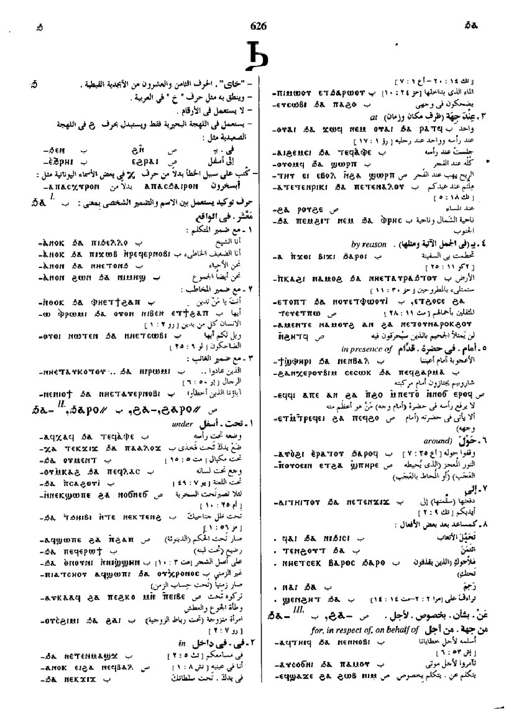
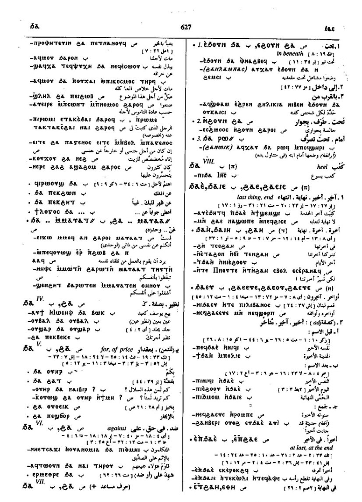

(preposition)
under, in, at [υπο]
dative
from [εκ, απο]
by reason of [υπο, απο]
for, in respect of, on behalf of [υπερ]
for of price [αντι]
against
dative
from [εκ, απο]
by reason of [υπο, απο]
for, in respect of, on behalf of [υπερ]
for of price [αντι]
against
(S, sA, F, O)
ϩⲁ-
(A) ⳉⲁ-
(B, O) ϧⲁ-
(O) ⲭⲁ-
(S) ϩⲁⲣⲟ=
(A) ⳉⲁⲣⲁ=
(sA) ϩⲁⲣⲁ=
(B) ϧⲁⲣⲟ=
(F) ϩⲁⲗⲁ=
(A) ⳉⲁ-
(B, O) ϧⲁ-
(O) ⲭⲁ-
(S) ϩⲁⲣⲟ=
(A) ⳉⲁⲣⲁ=
(sA) ϩⲁⲣⲁ=
(B) ϧⲁⲣⲟ=
(F) ϩⲁⲗⲁ=
| (S, B) ⲉⲃⲟⲗ ϩⲁ-, ⲉⲃⲟⲗ ϧⲁ- | (mostly doubtful if ⲉⲃⲟⲗ belong to vb or prep), away, from [εκ]3244 | Crum: 633b | |||||||
| (S, B) ⲉϩⲟⲩⲛ ϩⲁ-, ⲉϧⲟⲩⲛ ϧⲁ- | in beneath [υπο]3245 | Crum: 634a | |||||||
| (S) ⲉϩⲣⲁⲓ ϩⲁ- | under, up to3246 | ||||||||
| (S)
ϩⲁⲣⲓϩⲁⲣⲟ=
(pron.)
(A) ⳉⲁⲣⲓⳉⲁⲣⲁ= (pron.) (sA) ϩⲁⲣⲓϩⲁⲣⲁ= (pron.) (B) ϧⲁⲣⲓϧⲁⲣⲟ= (pron.) |
(pronoun)
refl pron, of myself, himself &c, alone, apart [καθ εαυτου, εισ εαυτου]3247 |
||||||||
| (B) ϩⲁ- | scribal error ? for ϧⲁ- [περι, υπερ]3248 | Crum: 634b | |||||||
See also:
| view | (S, B) ϩⲁ-, ϩⲁⲣⲟ= | (preposition) to, toward
― of persons [προσ] ― not of persons [προσ, εισ]2094 |
Crum: 632,633,634

632

633

634
Dawoud: 626a-626b,
626b-627a, 627a,
627a, 627a, 627a-627b,
629a-629b

626

627

629